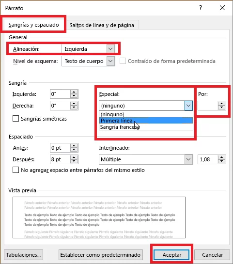
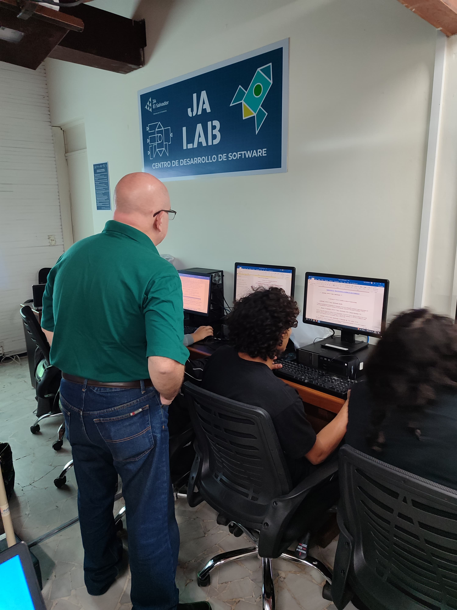
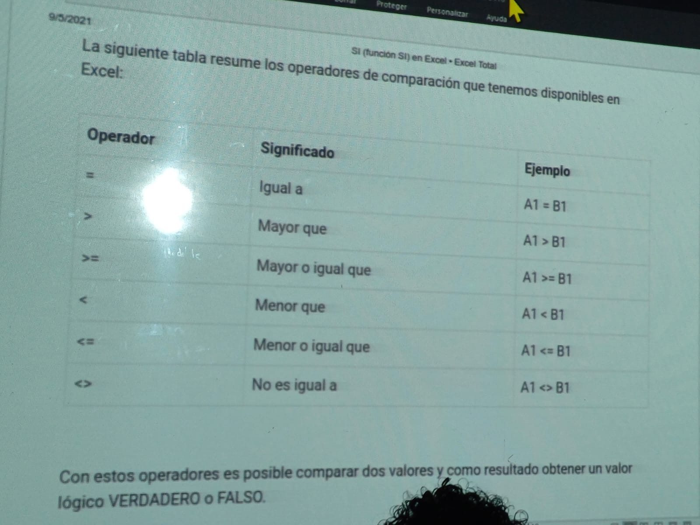
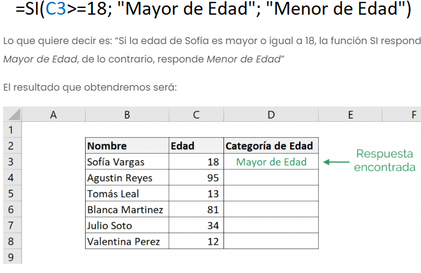

La Fundación Junior Achievement nace en EEUU en el año 1919. Con más de 100 años de historia se ha convertido en una de las organizaciones internacionales sin ánimo de lucro, dedicada a promover la formación emprendedora, la educación financiera y la preparación laboral, más grandes del mundo.
Es un programa de procesamiento de textos, diseñado para ayudarle a crear documentos de calidad profesional. Con las mejores herramientas de formato de documentos, Word le ayuda a organizar y escribir sus documentos de forma más eficaz.
 Excel es una herramienta muy eficaz para obtener información con significado a partir de grandes cantidades de datos. También funciona muy bien con cálculos sencillos y para realizar el seguimiento de casi cualquier tipo de información. La clave para desbloquear todo este potencial es la cuadrícula de las celdas.
 Es un potente software de presentación desarrollado por Microsoft. Es probablemente la herramienta más popular a la hora de hacer presentaciones, por lo que es usado en todo el mundo, por empresas grandes y pequeñas. Microsoft Power Point es un componente estándar del software de la suite Microsoft Office de la empresa y se incluye junto con Word, Excel y otras herramientas de productividad de Office, lo que ha ayudado a su popularidad. En Microsoft Power Point se presentan diapositivas para transmitir información con elementos en multimedia. Este programa se utiliza para crear presentaciones comerciales complejas, esquemas educativos simples y mucho más.
Son un conjunto de competencias conductuales, rasgos de personalidad, actitudes, capacidades innatas, habilidades sociales y hábitos personales que facilitan la motivación, la empatía, la comunicación y el desarrollo de objetivos, de manera conjunta con otras personas.
Descripción de cada uno de estos herramientasd:
{kind=link}
{kind=link}